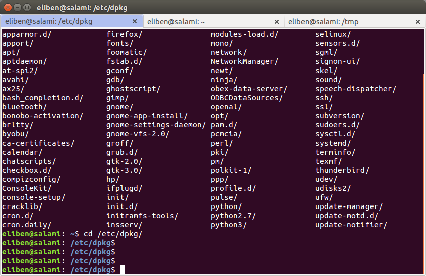

On Ubuntu, I like using the default GNOME terminal for all my command-line needs, and I'm a big fan of its tabs. One of the problems with tabs, however, is that it's not always easy to tell which tab you're currently in - which tab is the active one. By default, the terminal application makes a very slight visual distinction between the active and inactive tabs, and it would be really nice if it was more prominent.
Luckily, it isn't difficult to configure GNOME to do this:
For Ubuntu 14.04, create a file named ~/.config/gtk-3.0/gtk.css, and place the following into it:
TerminalWindow .notebook tab:active {
background-color: #b0c0f0;
}
The color itself can be customized, of course. This technique supposedly works on all the latest Ubuntu versions starting with 12.10; it doesn't work on 12.04, though. What did work on 12.04 for me is the technique described in this forum post.